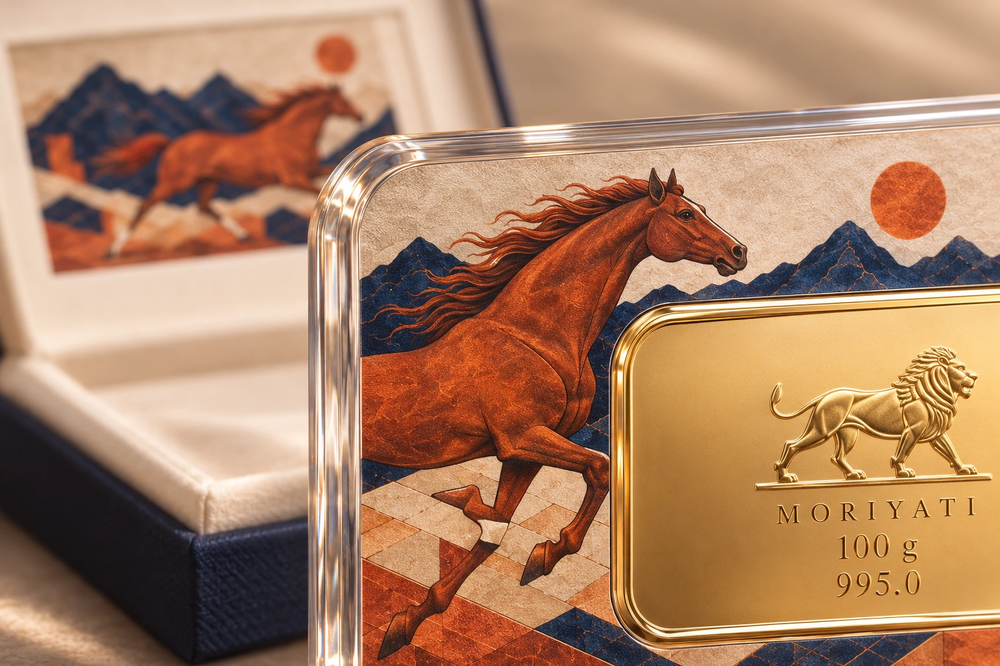

پیشینهٔ خانوادگی موریاتی به اصفهانِ روزگار قاجار بازمیگردد؛ به بیش از دو قرن فعالیت در ساخت و تجارت طلا، جواهر و اشیای نفیس. این تجربه در دو خاندان سوزنی و پورهنگ شکل گرفته و در خانوادهٔ مهربان، از جواهرسازی و طلاسازی به تولید صنعتی و پالایش فلزات گرانبها گسترش یافته است.
در این خانواده، هر نسل با تخصصی مشخص شناخته شده و در حرفهٔ خود جایگاهی برجسته در ایران داشته است.
در شاخهٔ پدری، خاندان سوزنی پیشینهای چندنسلی در جواهرسازی و شناخت اشیای نفیس دارد. عزیزالله سوزنی، با سابقهٔ ساخت جواهرات سلطنتی، از چهرههای شاخص این خاندان بود. حاج حسین سوزنی از تجار شناختهشدهٔ آثار عتیقه بود و دستبندهای حاج رضا سوزنی، پدربزرگ پدری علیرضا و آلا مهربان، در بازار طلای ایران شهرت داشت.
در شاخهٔ مادری، خاندان پورهنگ پیشینهای در هنر و ساخت زیورآلات دارد. استاد جواد پورهنگ، پدر حاج حسن پورهنگ، هنرمندی بود که با طلا و جواهر، آثار هنری و زیورآلات خلق میکرد. حاج حسن پورهنگ صاحب برند «کوشش»، یکی از قدیمیترین بوتیکهای طلا و جواهرسازی اصفهان بود و آثاری را که عرضه میکرد، خود میساخت. او نخستین مبدع طلای سرخ در ایران بود؛ دستاوردی با جایگاهی ویژه در پیشینهٔ این خاندان. حاج جواد پورهنگ، پدربزرگ مادری علیرضا و آلا مهربان، این پیشینهٔ خانوادگی را با تولید زیورآلات فاخر طلا در کارخانهٔ خود ادامه داد.
این دو پیشینه در خانوادهٔ حاج محمدحسین مهربان و الهه پورهنگ به یکدیگر رسیدهاند. آنان و فرزندانشان، علیرضا و آلا، زادهٔ اصفهاناند؛ شهری که خاستگاه خانواده و بخشی از هویت موریاتی است.
THE EVOLUTION OF EXPERTISE
از کارگاه تا تولید صنعتی
تا ۱۳۸۵
حاج محمدحسین مهربان، با تخصص در ساخت النگو، این مسیر خانوادگی را در اصفهان ادامه داد. طراحی متمایز و ظرافت اجرا، از ویژگیهای النگوهای او بود. او تا سال ۱۳۸۵ کارگاه النگوسازی خود را اداره میکرد و با انتقال خانواده به تهران، فعالیت مجموعه را به تولید کارخانهای گسترش داد.
۱۳۸۵ — ۱۳۹۰
در فاصلهٔ سالهای ۱۳۸۵ تا ۱۳۹۰، ساخت پایهٔ جواهر و تولید مصنوعات سبک طلا به روش ریختهگری، محور فعالیت کارخانه بود. این مجموعه از نخستین کارخانههای ایران در تولید نسل تازهٔ مصنوعات سبک طلا به شمار میرفت؛ محصولاتی از جمله دستبند، نیمست، آویز و انگشتر.
از ۱۳۹۰
از سال ۱۳۹۰، پالایش تخصصی طلا و نقره نیز در کنار فعالیتهای تولیدی آغاز شد و حوزهٔ فعالیت مجموعه در فلزات گرانبها توسعه یافت.
THE PRESENT GENERATION
خانهٔ موریاتی، امروز
علیرضا مهربان در سال ۱۳۹۷ به کسبوکار خانواده پیوست و امروز مدیریت عامل مجموعه را بر عهده دارد. حاج محمدحسین مهربان در جایگاه رئیس هیئتمدیره و الهه پورهنگ بهعنوان عضو هیئتمدیره، در راهبری مجموعه حضور دارند.
نسل امروز، این پیشینه را با تخصص در طراحی و تولید شمشهای طلا و نقره ادامه میدهد. دقت تولید، طراحی متمایز و مهندسی اختصاصی بستهبندی، پایههای این تخصصاند که موریاتی را در میان نامهای شاخص این حوزه در ایران قرار دادهاند.
Au · Ag۱۳۹۷
THE ARTISTIC DIRECTION
آلا مهربان؛ نگاه هنری خانه

آلا مهربان، مدیر هنری خانهٔ موریاتی و عضو هیئتمدیره، مسئول شکلدادن به زبان هنری این خانه است. او مسیر طراحی مجموعهها را از ایده و انتخاب موضوع تا نقشپردازی، ترکیببندی و ارائهٔ نهایی هدایت میکند.
نقاشیهای خلقشده در خانهٔ موریاتی، نقشهای اختصاصی و هویت بصری آثار، در امتداد این هدایت هنری قرار دارند. در مجموعههایی که نقاشی و طلا کنار یکدیگر قرار میگیرند، اثر هنری، قاب و قطعهٔ فلزی بهعنوان اجزای یک ترکیب واحد در نظر گرفته میشوند.
بستهبندی و جزئیات ارائه نیز ادامهٔ همین نگاهاند. نقش آلا، حفظ انسجام و شخصیت هنری مجموعههاست؛ تا هر اثر، از ایدهٔ نخستین تا شکل نهایی، هویت هنری مشخص و قابل تشخیصی داشته باشد.